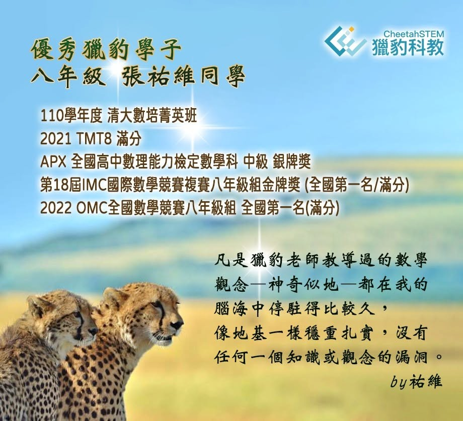

獵豹學子 張祐維（八年級）
錄取110清大數培菁英班 參與各項競賽檢定表現優異
心得分享」
張祐維同學 參與 獵豹 高一高二數學課程：S101~S111
🎖110學年度 錄取清大數培菁英班
🎖2021 TMT8 滿分
🎖APX 全國高中數理能力檢定數學科銀牌獎
🎖第18屆IMC國際數學競賽複賽八年級組金牌獎 (全國第一名/滿分)
🎖2022 OMC全國數學競賽八年級組 全國第一名(滿分)
祐維同學 獵豹數學學後感想心得
凡是獵豹老師教導過的數學觀念—神奇似地—都在我的腦海中停駐得比較久，像地基一樣穩重扎實，沒有任何一個知識或觀念的漏洞。
高一的課程與國中的內容相差甚大，可能使人一時之間手足無措，難以銜接，而獵豹的老師們以超修的課程使我們可以快速進入狀況，不會跟不上。老師都用親切易懂的話語配合和精心編製的講義，將艱澀的數學知識化繁而簡，配合經典例題進行講解，也在過程中與學生互動，讓我們徹底了解透徹。
每次上課結束後，老師會公布今日的思考題，是一些較困難的延伸題目，學生完成後可以詢問解答，還會有紙本及線上的作業，精選出系統中的題目派卷給學生作答，作為課後的必要練習，還會將老師上課的筆記，放到Ragic系統上，讓我們可以下載再閱讀。而且，在段考前老師會提供段考複習課堂，講解名校題與易考觀念，讓我們一目瞭然，輕鬆準備段考。
另外，老師不時提供專題課程，有些事課內的延伸，有些是課外的補充，更有一些解題的技巧方法，教導高手思考模式，可以增加我們面對問題時用有的工具，遂將難題迎刃而解。最後，每個禮拜會有習題講解課，將作業中的難題做解答及進一步的講解，也補充了一些易錯題。
學生與老師共用一個Line群組，有問題時隨時都可以進行發問，便會有老師幫助解惑。我相信只要在老師上課時認真作筆記，認真聽，也認真參與，必然可以有極大收穫，數學突飛猛進!!!
